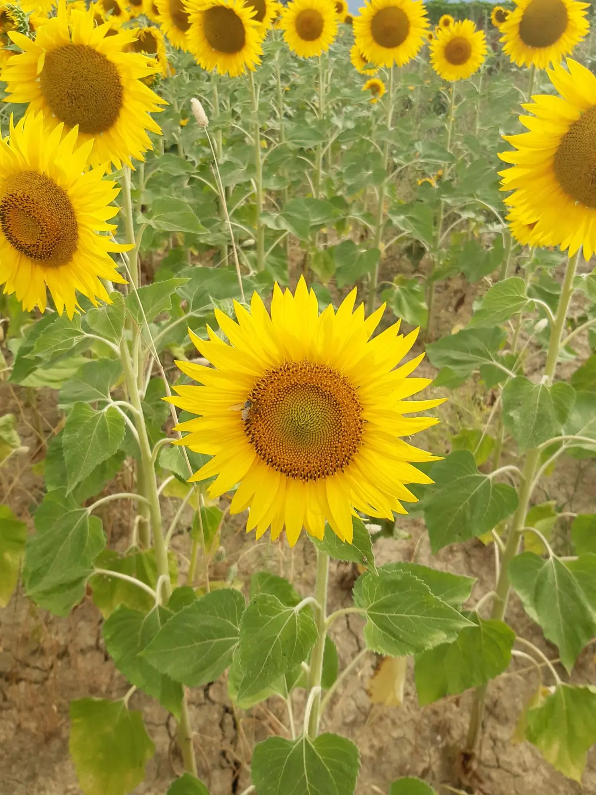

Contatti · pagina 6
Scrivici o passa a trovarci
Per ordini, assaggi, bomboniere o per uno sciame da recuperare. Il modo più veloce è WhatsApp.

§ 1
Recapiti
- Telefono
- 342 0000730
- Scrivici su WhatsApp
- Indirizzo
- Via Case Cicchetti
64024 Notaresco (TE) - Azienda
- Di. Di. P di Di Giuseppe Gabriele
P.IVA 02072780675